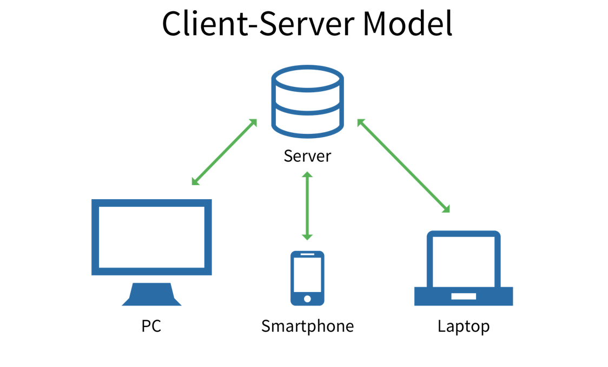

| Web Technology | Web Security | Client or Server concepts |
|---|---|---|
| HTTP(Request-Response) | Types of Web Content | Components of Web Application |
Web Technology
You probably know that computers don't communicate with each other the way that people do. Instead, computers require codes, or directions. These binary codes and commands allow computers to process needed information. Every second, billions upon billions of ones and zeros are processed in order to provide you with the information you need. So what does that have to do with your ability to post your latest pictures online? Everything.The methods by which computers communicate with each other through the use of markup languages and multimedia packages is known as web technology. In the past few decades, web technology has undergone a dramatic transition, from a few marked up web pages to the ability to do very specific work on a network without interruption. Let's look at some examples of web technology.
Client/Server concepts
The client-server model describes how a server provides resources and services to one or more clients. Examples of servers include web servers, mail servers,and file servers. Each of these servers provide resources to client devices, such as desktop computers, laptops, tablets, and smartphones. Most servers have a one-to -many relationship with clients, meaning a single server can provide resources to multiple clients at one time.
Components of Web Application
Any web application, big or small, contains these major components:
View Layer:-
When you consider an MVC application, the View layer component gives an interface to the application. Regardless if it is for users with a browser or for another application using Web services. View layer is the bridge for getting the data in and out of the application.It does not have business logic, like calculating interest for a banking application or storing items in a shopping cart for an online catalog. It also does not contain any code for existing data to or retrieving data from a data source. Business logic is managed by the Model layer. View layer is more focused on the interface.
Business Layer:-
It is also known as Business Logic or Domain Logic or Application Layer. The function of the business layer is to accept user requests from the browser, processes them, and determine the routes through which the data will be accessed. The workflows by which the data and requests travel through the back end lay encoded in a business layer.
Data Access Layer:-
This layer is built to keep the code you use to pull data from your data store like database, flat files, or web services separate from business logic and presentation code. So even if you have to change data stores, you don’t end up rewriting the whole thing.There are many ORM frameworks that are blending the DAL with other layers which makes development easy during web application development services.
Error handling, security, logging:-
When you build a web application, people generally tend to focus on the end-goal, building and testing only for situations when things go right. Alas! things rarely go right all the time in the real world.This is where error handling is a vital part of any application’s user experience. And, if it is done well, it can leave your users feeling informed and properly considered.
Types of Web Content
Expert web content development produces pages that your audience will find helpful, informative, unique, and entertaining. Done right, it encourages visitors to stay longer on a site to explore and learn more or to bookmark pages to return to again later. In addition, original and high-quality text-based content that is optimized for SEO can help your site rank well in web searches, helping customers and prospects find you. Here are 7 types of high-quality web content that can please website visitors and keep them coming back for more.
1. Blogs
Blogging is an invaluable tool for driving visitors to your website, and building awareness about you and your brand. Generally written from a more personal and informal point of view than content assets, a blog is a great way to connect with readers. It is the perfect vehicle for providing them with information that not only answers a question or solves a problem, but also helps to establish you as a trusted authority on the topic. Blogs are also a great way to keep your web content fresh, enabling you to post new content on a regular basis and helping you continue to rank in SERPs (search results).
2. Content assets
This broad category of web content includes collateral and similar resources you have already invested in and can now repurpose to help draw visitors to your website. Some examples are product brochures, user manuals, slide presentations, white papers, industry reports, case studies, fact sheets, ebooks, webinars, and podcasts. The goal is to extend the value of these assets by using them across different digital media and channels. The content can be broken up into smaller pieces and distributed in new ways, such as via blog posts, tweets, video clips, email blasts, search engine ads, and other channels.
3. Calls to action
A call to action (CTA) is a prompt designed to get your website visitor to take some immediate action, such as make a purchase or get more information. In addition to having CTAs on your web pages, you can include them in other marketing content you use to drive traffic to your website, such as blogs, emails, social media posts, and e-newsletters.
Some common prompts:
• Apply today
• Book now
• Contact us
• Download for free
• Get a quote
• Join today
• Learn more
• Order now
• Register today
• Shop online and save
A CTA may take your web visitor to a landing page for further action. Whatever your CTA is, it is important that the intent is clear and your audience has a good idea what to expect. After all, you don’t want lose visitors by having them click on a link that takes them somewhere they really don’t want to go.
4. Landing pages
Landing pages are destinations — the web pages where visitors are sent when they click on a hyperlink, such as a search engine result, a social media ad, a CTA, or a special offer on your website. These pages are designed to help you convert website visitors into leads by providing a way to capture their contact information. For example, suppose you want to build your authority as an SME by offering a free white paper to your website visitors. When they click on the offer link, it can take them to a landing page where the content of white paper is described in more detail and they can download the paper by submittings an email address.
5. Testimonials
One of the best ways to appeal to prospects and build credibility is with relatable success stories from their peers. That is what makes customer testimonials such valuable web content. Whether your goal is to create formal case studies, include real-life customer scenarios in a white paper, or post short video clips on Twitter or Facebook, having a process in place to identify happy customers and capture their feedback is a great idea. TIP: Don’t hide all your valuable customer feedback on one testimonials page. Include testimonials throughout your site to serve as social proof that validates your claims.
6. Video & audio content
With the ability to embed video and audio clips so that anyone can view and listen without leaving the webpage, digitally recorded media are increasingly popular web content tools. It is a great way to offer content such as how-tos, webinars, podcasts, and seminars.
7. Visual content
According to the Social Science Research Network, 65% of people are visual learners. So, it makes good sense to incorporate visual web content into your website. In addition to having a graphic design that helps to convey the flavor and purpose of your brand, you can: • Use images — preferably original ones — to break up and enhance the text • Create videos to entertain and inform • Reiterate key information in a concise way through infographics • Create your own memes to make important messages more memorable • Offer presentations for visitors who want details in a more graphic, bulleted format • Include screenshots to clearly show things that may be difficult to explain in words
Web Security
Web security is also known as “Cybersecurity”. It basically means protecting a website or web application by detecting, preventing and responding to cyber threats. Websites and web applications are just as prone to security breaches as physical homes, stores, and government locations. Unfortunately, cybercrime happens every day, and great web security measures are needed to protect websites and web applications from becoming compromised. That’s exactly what web security does – it is a system of protection measures and protocols that can protect your website or web application from being hacked or entered by unauthorized personnel. This integral division of Information Security is vital to the protection of websites, web applications, and web services. Anything that is applied over the Internet should have some form of web security to protect it.
HTTP Requests and Response

Overview of HTTP HTTP is a protocol which allows the fetching of resources, such as HTML documents. It is the foundation of any data exchange on the Web and it is a client-server protocol, which means requests are initiated by the recipient, usually the Web browser. A complete document is reconstructed from the different sub-documents fetched, for instance text, layout description, images, videos, scripts, and more. HTTP works as a request-response protocol between a client and server. Example: A client (browser) sends an HTTP request to the server; then the server returns a response to the client. The response contains status information about the request and may also contain the requested content.